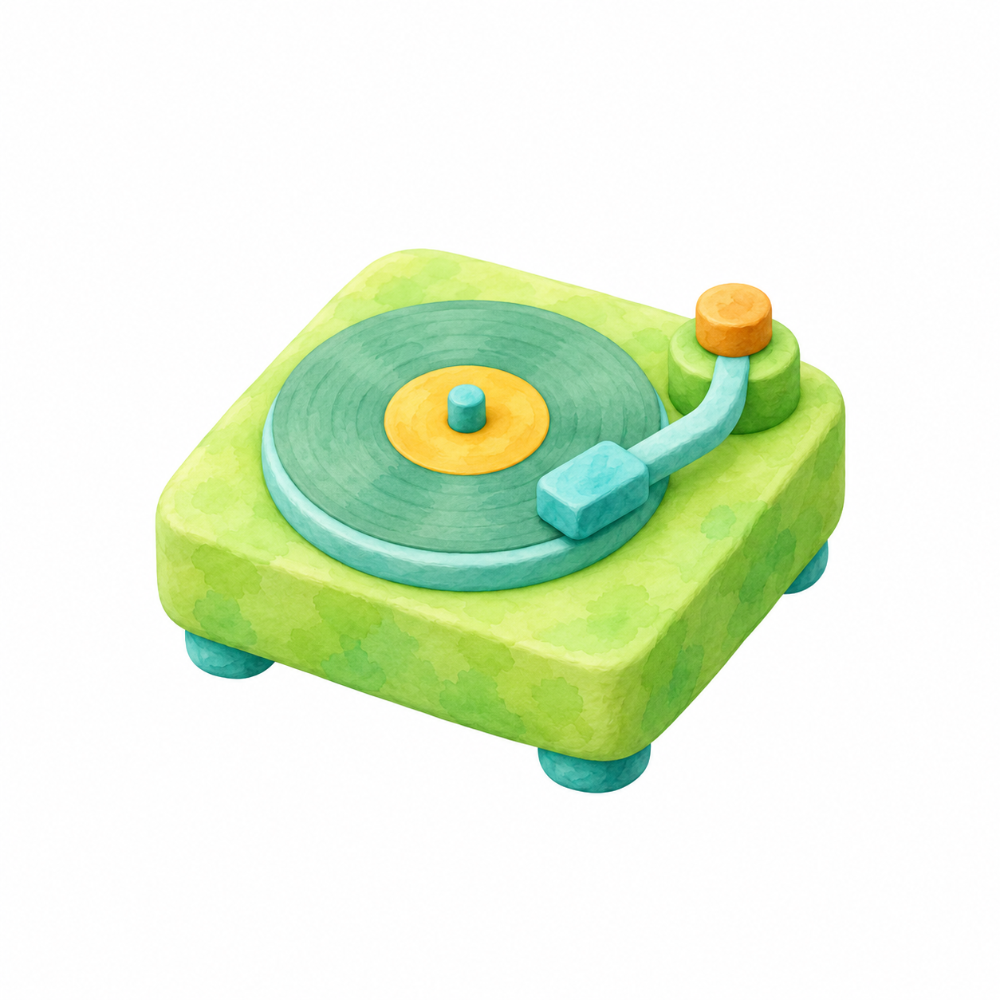
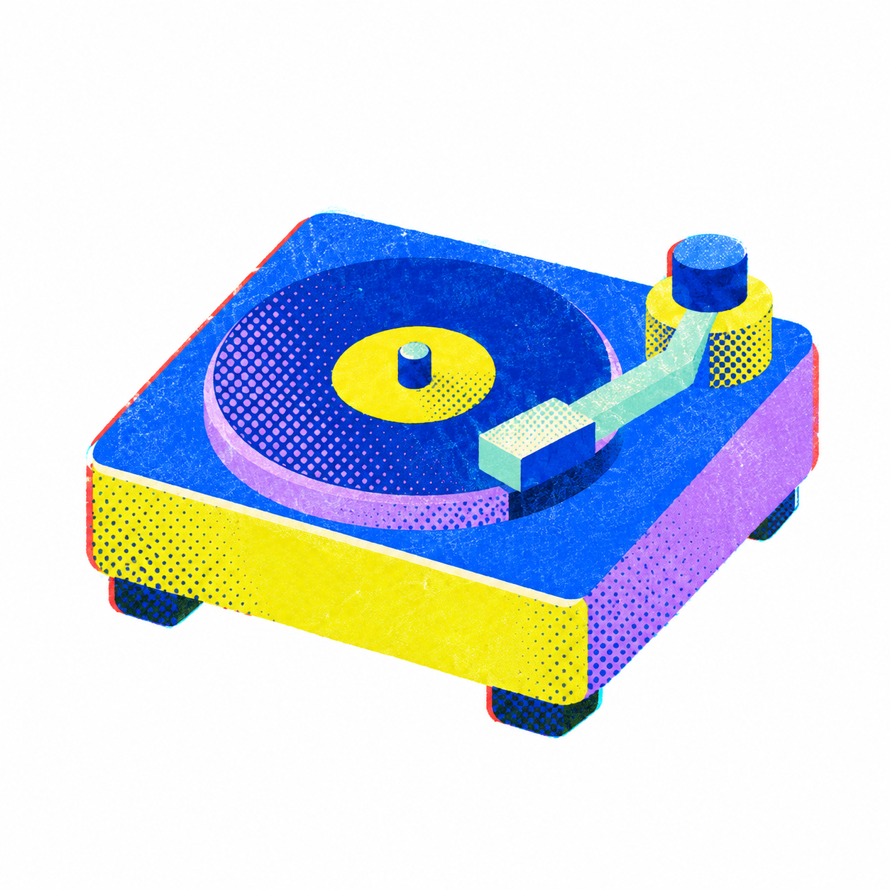

Pick a look
Browse the gallery. Open a style to see its visual recipe and reference examples.
A collection of 28 illustration skills for making distinctive, consistent icons with Codex. Browse the looks, pick a direction, and create one icon at a time.

Clay
RisoEach skill gives Codex a clear visual recipe: how the shapes are built, how the light falls, and which details make the style recognizable.
Every skill includes a detailed prompt recipe and visual checks.
See how to use a skill ↓Some reference examples are from the public Waterlemon gallery. This independent skill library is not affiliated with Waterlemon.
Use the wizard when you want to choose every detail. Or call a style directly when you already know what you want.
Browse the gallery. Open a style to see its visual recipe and reference examples.
In Codex, say “Use illustration-icon-wizard.” It will guide you in small steps.
Answer one question at a time: subject, palette, background, shape, and output.
Confirm your choices, review the icon, then ask for a focused change if needed.
Use the illustration-icon-wizard skill. Ask me one question at a time and wait for my answer before asking the next.
Call a style by name for a more direct start. The skill still asks its setup questions one by one, then uses its own style rules to build the prompt.
Browse style names ↗One icon or a matching set?
The short version of how these skills work and how to add to the collection.
A skill is a folder with a SKILL.md that teaches Codex how to handle a specific task. Here, each style has its own skill and the wizard helps you pick options before creating an icon.
Attach illustration-icon-skills.zip to Codex and ask it to install the skills, or copy the folders inside skills/ into your Codex skills directory. Restart or refresh Codex if the skills do not appear.
Say: “Use illustration-icon-wizard.” Choose one option per question. Reply back to revise the previous choice, or default to accept the current suggestion.
Yes. Say “Use flare-icon” or another style name. It will skip the style picker while keeping the one-question-at-a-time flow for the rest of your choices.
Yes. Share the reference image and ask Codex to study its shape language, materials, light, palette, texture, and level of detail, then add a new standalone style skill. Keep the reference available during that work so Codex can inspect it.
The style skills give the image tool a detailed direction and checks, but image generation has some variation. Review the result at its intended size and ask for a specific correction if it drifts.